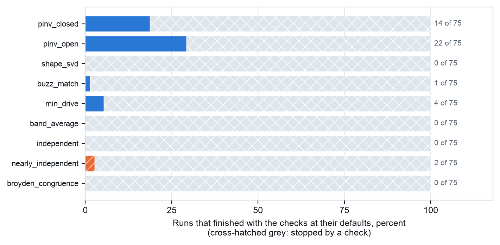
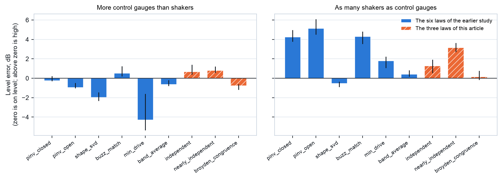
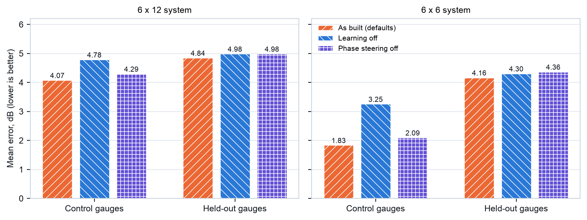

Hertzforge Journal
Independent Drive Laws and a Broyden Congruence Law for Multi-Shaker Random Vibration: The Laws, Their Build in Hertzforge, and Their Scores on the Open Benchmark Set
Research Article
EvidenceSimulator. Closed-loop runs of three control laws through Hertzforge's control service on its simulator, on the Open Benchmark Set's MIMO Random suite (version 0.2): ten generated structures, five systems, a linear stage and two sizes of level-dependent change, one run per case, compared with the six laws of an earlier study on the same ten structures, and a sample tested again on five held-back structures.
Abstract
Some multi-shaker random vibration tests ask for drives with no relation between them. This article adds three such control laws to Hertzforge, an open-source structural dynamics suite: an independent and a nearly independent drive law, built from the published papers with refinements from the second author’s written notes, and a Broyden congruence law built from those notes alone. Each runs closed loop on Hertzforge’s simulator, on ten structures of the Open Benchmark Set, beside the six laws of an earlier study. On linear structures, at the control gauges only the band-average law is lower than the Broyden law by more than 0.2 dB: by 0.5 dB on the 6 x 12 system and 0.8 dB on square systems. Its level is within about 1 dB of the target. The independent drive law has one of the highest errors at the control gauges, yet on square systems is 3.0 to 11.3 dB lower at the held-out gauges and in stress than the two pseudo-inverse laws, the buzz-test law and the nearly independent law, which behaves like those three there. Of 280 claims tested on five held-back structures, 254 held, 18 fell inside 0.2 dB and 8 were not borne out.
Summary
Some multi-shaker random tests ask for drives with no relation between them, called independent drives. This article adds three control laws of that kind to Hertzforge and scores them on the Open Benchmark Set beside the six laws of an earlier study, on the same ten structures. A comparison is the median difference between two laws on the same structure and system; nothing under 0.2 dB is claimed, and no law is graded as a whole.
- What was added, and from what.
independentandnearly_independentare built from the published papers, with refinements from Hunter’s written notes;broyden_congruenceis built from his notes alone. The laws were written from those papers and notes, not from any code of his. broyden_congruence. On the linear structures, at the control gauges only the band-average law is lower than it by more than 0.2 dB. With more control gauges than shakers the two are within 0.2 dB at the control and held-out gauges over the three such systems, where the Broyden law is at least 1.0 dB lower at the control gauges than each other law; on the 6 x 12 system alone the band-average law is 0.5 dB lower at the control gauges, andmin_driveis within 0.2 dB of the Broyden law. On square systems the band-average law is 0.8 dB lower at the control gauges, and the Broyden law is more than 4 dB lower at the held-out gauges than the two pseudo-inverse laws, the buzz-test law andnearly_independent(2.6 dB or more on the 6 x 6 system alone). Its level is within about 1 dB of the target.independent. Its error at the control gauges is among the highest, as a law that plays independent drives must be where the target asks for more than such drives can give. Yet on square systems, on the linear structures, its errors at the held-out gauges and in stress are 3.0 to 11.3 dB lower than those of the two pseudo-inverse laws, the buzz-test law andnearly_independent(2.2 to 11.5 dB on the 6 x 6 system alone). It runs 0.7 dB high, and 1.3 dB on square systems.nearly_independent. With more control gauges than shakers it sits among the line-by-line laws; on square systems it behaves like them, about 10 dB at the held-out gauges and about 3 dB high.- What the refinements and the closed loop change. In
independentthe non-negative solve matters: the published rule, which sets a negative level to zero, ran 0.8 to 6.4 dB higher at the held-out gauges and 1.9 to 5.4 dB higher in level. Innearly_independentthe refinements changed the scores little, and the open form ran about 1 dB higher at the held-out gauges than the closed loop on the 6 x 6 system. - The held-back structures. Of 280 claims written by a fixed rule and tested on five structures no one had tuned on, 254 held, 18 fell inside 0.2 dB and 8 were not borne out; a second computation from the scorecards, made apart from the first, gave the same 280 verdicts. The order of
independentandbroyden_congruenceat the held-out gauges on the square system is not settled, and the Broyden law’s level on the 6 x 6 system’s linear structures, 0.6 dB high in the study, was 1.2 dB high on the held-back structures. - Limits. Simulator only; one family of generated structures; ten study structures; one run a case.
1. Independent Drives
The terms are those of the earlier articles in this journal (Cross and Zwink 2026; Cross 2026d). The accelerometers the controller reads and brings to their targets are the control gauges. A held-out gauge is recorded but never shown to the controller; it is used only to judge the test. A system is the article on its shakers with its gauges, as the controller sees it. A system is written shakers by control gauges: a 6 x 12 system has six shakers and twelve control gauges, and a square system has as many shakers as control gauges. The controller works line by line on a grid of narrow frequency slices, and what it knows of the system is the measured frequency response : on each line, the acceleration at each control gauge per volt of drive at each shaker, measured at the start of the run, about 20 dB under the target, and by default kept for the whole run.
On each line the drives are described by a matrix , one row and one column per shaker. Its diagonal holds each shaker’s drive autospectrum, its level on that line; each term off the diagonal is the cross spectrum of a pair of drives, which carries how strongly the two are related (their coherence) and their phase. The coherence between two drives is here the magnitude of their cross spectrum divided by the square root of the product of their two autospectra, from 0 for unrelated drives to 1 for fully related ones; it is not squared. The response at the control gauges is
and the target has the same form: an autospectrum for each control gauge and, where it is specified, a cross spectrum for each pair.
Independent drives means that the drive matrix is diagonal on every line: no cross spectra between drives, so each shaker plays a random signal unrelated to the others. Then the response autospectra depend on the drive levels alone,
where is the level of drive and is a real matrix of the squared magnitudes of the measured frequency response (Mayes and Rohe 2016). The phase of does not enter.
Why a test laboratory would want it. Many specifications give only autospectra at the control gauges, with no cross spectra: an acoustic environment reproduced with shakers is the usual case (Mayes and Rohe 2016). A law that must meet a full target matrix then needs cross spectra that nobody measured. Independent drives need none. They also ask for the least drive of the methods Schultz compared (Schultz 2019). Hunter, Cross and Nelson note that where the table is the control location, independent drives should work well, and that the coupling that defeats them is strongest at the modes of a test item on a soft support driven by small shakers (Hunter et al. 2018). What is given up is control of the coherence and phase between gauges: they are whatever the structure makes of uncorrelated drives, and Schultz found that independent drives tend to over-test (Schultz 2019). Where no set of non-negative levels produces every target autospectrum, the method cannot meet them all.
The published methods. Five published papers state the method or a stage of it.
- Independent drives solved line by line from the autospectra. Mayes and Rohe give the whole method (Mayes and Rohe 2016): Equation 2; a Tikhonov pseudo-inverse of with its constant 0.01 times the largest diagonal element of ; a first solve for the levels from the target autospectra; and a feedback iteration that adds the solve of the autospectrum error to the levels of the last iteration, each level held to +100 and -67 percent a step. A negative level is set to “a small positive value”, with no value given. Schultz states the first solve for a plate with nine shakers, sets negative levels to zero, and credits the method to Smallwood (Schultz 2019).
- The rescale and the second solve. Schultz adds in one sentence that, as Smallwood described, the target can be rescaled from the estimated responses and the drives solved a second time (Schultz 2019). Cap, Norman and Smallwood state that procedure as an independent drive algorithm credited to Smallwood (Cap et al. 2015): the response the independent drives produce, , is rescaled so that its autospectra equal the target’s while its coherence and phase are kept, and the drive matrix that produces the rescaled response is solved with a regularized pseudo-inverse. The result is “no longer truly independent”. The Smallwood paper they cite for it was not available to the authors. Schultz and Avitabile describe Smallwood’s independent drives method in the same two stages: the problem solved first for independent drives, and the response those drives predict used as a new target (Schultz and Avitabile 2020).
- The nearly independent drive algorithm. Hunter, Cross and Nelson name the two-stage procedure the nearly independent drive algorithm: solve for the independent levels, set a negative one to zero, compute the trial response, scale it to the desired autospectra and solve for drives that are coupled “just enough” (Hunter et al. 2018). They print it for a single spectrum vector, which gives a response of unit coherence; the spectral-density form of the same idea is Cap, Norman and Smallwood’s.
What the published record leaves open. Only Mayes and Rohe state how the levels are solved from the autospectra in full; the other papers write the solve with an undefined matrix, without its inverse, or omit it. No source solves for the levels under the condition that they be zero or more; three of them clip a negative level after the solve (Cap, Norman and Smallwood do not mention negative levels), and none says whether the clip is done once or repeated. No source says what the rescale does with a gauge whose trial autospectrum is zero, how the second solve is regularized, what is done with the part of the rescaled response that a system with more control gauges than shakers cannot produce, or how a feedback loop is closed around the two-stage method. Mayes and Rohe’s change limit is stated for voltage while their iteration updates autospectra. Every point left open is decided in the build and listed in Section 3 as Hertzforge’s choice.
Where the three laws sit among the six. Hertzforge ships six laws for multi-shaker random vibration, described in an earlier article (Cross 2026e) and scored in another (Cross 2026d). Four of them (pinv_closed, shape_svd, buzz_match, min_drive) correct the drive through one shared closed loop, after Smallwood (Smallwood 1999), and differ in the target and the directions they hand it; pinv_open plays the inverse with no correction; band_average fits band averages. The independent drive law (independent) has its own loop and never forms a cross spectrum between drives. The nearly independent drive law (nearly_independent) is closest to buzz_match: both keep the target’s autospectra and take the coherence and phase between gauges from a response to uncorrelated drive, buzz_match from the response measured during identification and nearly_independent from the response the measured frequency response predicts for the solved independent levels; both then hand that target to the shared closed loop. The Broyden congruence law (broyden_congruence) has its own loop and, like the independent drive law, holds the autospectra only.
2. The Laws
The Broyden congruence law and Hunter’s four refinements of the nearly independent drive algorithm are from unpublished notes by the second author (November 2026), referred to here as Hunter’s written descriptions. Each law is given step by step, on one line; every line is treated alike and on its own. Where the build decides a point the published papers or Hunter’s written descriptions leave open, the text says so; the full list is in Section 3. Table 1 lists the three laws.
| Law | Code name | What it does | Sources |
|---|---|---|---|
| Independent drives | independent |
Solves the drive levels from the target autospectra, with no cross spectra between drives, and corrects them every loop from the measured autospectra | Mayes and Rohe; Schultz; Hunter, Cross and Nelson; the non-negative solve by Hunter |
| Nearly independent drives | nearly_independent |
Keeps the target’s autospectra, takes the coherence and phase between gauges from the response the independent drives would produce, and holds that target in the shared closed loop | Cap, Norman and Smallwood; Hunter, Cross and Nelson; four refinements by Hunter |
| Broyden congruence | broyden_congruence |
Scales and turns each drive every loop, keeping the coherence between drives, by a sensitivity learned from the last loop | Hunter; the secant update by Broyden |
2.1 Independent Drives (independent)
The first drive. The levels are solved from the target autospectra through Equation 2 with Mayes and Rohe’s Tikhonov pseudo-inverse (Mayes and Rohe 2016):
In words: the levels that come closest, in least squares, to every target autospectrum, held back a little where is badly conditioned. With more control gauges than shakers the target cannot in general be met, and the solve takes the best fit; with fewer it takes the smallest levels that meet it. The drive is .
A negative level. A solved level below zero cannot be played. It means that on this line no uncorrelated drives produce the target autospectra: the structure couples the shakers too strongly for that. The published rule sets the negative level to zero and keeps the others (Hunter et al. 2018; Schultz 2019). Hunter’s refinement solves the same problem again over levels of zero or more:
In words: instead of dropping a shaker and leaving the others where the unconstrained solve put them, which then overshoots some gauges, the remaining levels are chosen again knowing that shaker is off. Where no level comes out negative, Equation 4 gives the same levels as Equation 3. The non-negative solve is the default of independent; the published rule is the setting solve = set_to_zero.
The closed loop. Each loop the law measures the response autospectra and adds the solve of the error to the levels last played, after Mayes and Rohe’s Equation 6:
where is the diagonal of the drive the controller actually played on the last loop and is a convergence factor. Each level may rise by at most 100 percent and fall by at most 67 percent from in one loop. With the non-negative solve, a step that would take a level below zero is solved over levels of zero or more, in the same way as Equation 4. The published step is whole, , the default; itself is a Hertzforge addition. The law reads the target’s autospectra only and returns a diagonal drive on every line, so the coherence and phase at the gauges are whatever the structure gives uncorrelated drives.
2.2 Nearly Independent Drives (nearly_independent)
The law runs the published two-stage method, carries Hunter’s four refinements by default, and then holds the target it has built. Each refinement has a setting that returns the law to the published form.
Step 1, the weighting by the target (Hunter’s refinement). Each row of and its target are divided by that target:
In words: each gauge’s error counts in proportion to its own level, so a gauge with a low target is not swamped by one with a high target, and a gauge with no target on a line takes no part there. On the three-gauge, two-shaker example of Hunter’s description, with targets 1, 0.1 and 1, the second row is multiplied by ten. With the weighting on, the Tikhonov term is formed drive by drive from the weighted matrix (Section 3).
Step 2, the trial levels (Hunter’s non-negative solve). The levels are solved as in Equation 4 with and . The worked example of this section is solved with the regularization constant set to zero. On the example with targets 1, 0.1 and 1, the plain solve gives levels 1.2046 and -0.2003; the published rule keeps 1.2046 and sets the second to zero; the non-negative solve gives 0.5405 and 0.
Step 3, the test for an exact independent solution (Hunter’s refinement). The plain least-squares levels, with no regularization, are tested: if every one is zero or more and
independent drives meet the target autospectra exactly on this line. Then those levels are the line’s answer: the target is the response they produce and the first drive is itself. In words: where truly independent drives work, the law does not couple them. On the example with targets 1.08, 0.75 and 0.82 the line is exact and the drive is . The test is the setting exact_tolerance; 0 turns it off.
Step 4, the trial response and its rescale (Cap et al. 2015). On a line that is not exact,
In words: the response the independent drives would produce is scaled gauge by gauge so that its autospectra are the specified ones, while the coherence and phase between every pair of gauges stay those of the independent-drive response. is the law’s target from here on. On the example with targets 1, 1 and 1, the trial levels are 0.9376 and 0.7960 and the trial autospectra 1.065, 1.030 and 0.887.
Step 5, back to drives (Cap et al. 2015). The drive that produces the rescaled response is
with a regularized pseudo-inverse of the measured frequency response. The drives are now coupled, as little as the target needs. On the example with targets 1, 1 and 1 the drive is 0.9581 and 0.8124 on the diagonal and -0.0564 between the two; with targets 1, 0.1 and 1 the trial response has one shaker off and is of rank one, and so is the drive: the two shakers are fully coherent.
Step 6, the level set (Hunter’s refinement). The drive is scaled by one number so that the total predicted power equals the total specified:
In words: with more control gauges than shakers the rescaled target cannot be met exactly, and the level set keeps the overall level right while the shape is off. On the example with targets 1, 1 and 1 the predicted autospectra before it are 1.0429, 0.9954 and 0.9598, is 1.0006, and after it they are 1.0435, 0.9960 and 0.9604, summing to 3. On a square system of full rank every target is reachable and is 1.
The open form and the closed form. Hunter’s description runs the law open loop: it sends the drive of steps 1 to 6 on every call and never uses the measured response. In Hertzforge that is the setting loop = open, which returns the same drive while the measured frequency response is held and forms it again when the response is measured again. The default, loop = closed, is Hertzforge’s: the rescaled target is handed to the shared closed loop of the default law (Smallwood 1999; Cross 2026e), with the drive of step 6 (or the diagonal drive of an exact line, where the loop can hold it) as its first drive. From the second loop on, the loop sets the level from the measured response, and the level set has no further effect. The published form is the weighting off, the non-negative solve off (set_to_zero), the exactness test off and the level set off.
2.3 Broyden Congruence (broyden_congruence)
This law is Hunter’s, and is published here for the first time. It specifies the autospectra only.
The idea. After the first drive the law never forms a drive again. On each loop and each line it multiplies each drive by a gain of its own and, with phase steering, turns its phase:
where is the log gain of drive (its level changes by dB) and its phase step. This is a congruence by a diagonal matrix: each term between drives and is multiplied by , so the coherence between every pair of drives is what it was, and a drive matrix that can be played stays one that can be played. The question each loop is only how far to move each drive. (The coherence changes only where the coherence cap acts, or on a line where the build steps from the drive the controller played, which carries that drive’s coherence; Section 3.)
The first drive. The inverse of the target, , with singular values at or below of the largest dropped. This is the only place the target’s cross terms are read; whatever coherence between drives it gives, the loop keeps. A cap on any pair of drives above a coherence of 0.95 follows; this coherence cap is on by default. Hunter’s description then scales the first drive so its predicted response starts 9 dB under the target; in Hertzforge the controller’s level schedule does that job, and this start cap is off by default (Section 3).
The error. For each control gauge, in natural logarithms,
positive when the gauge is low. A gauge measured at zero or below, or with no target, is left out.
The sensitivity. How the log response of gauge moves with the log gain of drive follows from Equation 1 with the shares , which sum over to :
Each row of the gain columns sums to 2 (raising every drive by the same gain raises every response by twice as much in log power) and each row of the phase columns to 0 (turning every drive alike changes nothing). This is the model’s sensitivity, , from the measured frequency response and the current drive.
Learning the sensitivity from the last loop. The measured frequency response can be wrong, and on a structure that changes with level it is. The law keeps a learned sensitivity , equal to the model’s on the first feedback loop, and corrects it each loop from what the last step did, by Broyden’s secant update (Broyden 1965). With the gains (and phases) the last loop applied and what the responses did,
In words: each gauge’s row is moved toward the sensitivity that would have predicted what happened, by the learning rate (0.6), and by less where the change predicted, , is small against the scatter of a measured autospectrum averaged times. A line whose gains changed less than 0.05 dB last loop learns nothing. Three corrections keep physical: no entry beyond , each row’s gain sum clipped to between 0 and 2, and each row’s phase entries shifted to sum to zero. Then the learned sensitivity is pulled 5 percent of the way back toward the model’s, .
Weights and the common level. Each gauge’s error is weighted by its multiple coherence (the share of its measured autospectrum the drives explain, the usual squared quantity, unlike the coherence between two drives above), . The common level is split off first: with the sum of row of the gain columns,
so the solve below shapes the drives and does not hold back an overall level error.
The solve for the step, with its ridge.
with , the ridge weight and the number of unknowns (the number of drives, or twice it with phase steering). The common level is added back to the gains, . In words: the least-squares step in the log errors, damped in directions the sensitivity barely sees.
The loop gain and the resonance schedule. The step is multiplied by the loop gain (0.5) and by a resonance gain with , where says how far the line stands above its neighbours in the measured frequency response. At a resonance the step is smaller. How is measured is Hertzforge’s (Section 3).
The step limit. Three predictions of the step’s effect are formed: the learned one, ; the model’s exact one, ; and the drive’s own, . If the largest exceeds 3 dB (0.6908 in natural log of power), the step is divided by the ratio, and the test is repeated up to six times, since the exact prediction is not linear in the step. With phase steering no phase may turn more than 15 degrees a loop.
Apply, then the ceiling, the floor and the cap. The congruence Equation 11 is applied. If any gauge’s expected response, , would exceed its target by more than 12 dB, or the model’s response through the measured frequency response would exceed it by more than 32 dB, the whole line’s drive is scaled down at once, whatever the step limit. A line whose drive has fallen to almost nothing is lifted to a floor, and any pair of drives above the coherence cap is cut to it. What the law keeps for the next loop is the drive after these three. In the build the floor is of the trace of the line’s model drive, formed once at the start of the run (Section 3); a line held at the floor produces, by the measured frequency response, at most a hundredth of the target’s total, 20 dB under it. The floor acts on a line’s whole drive, not on one shaker, and this is a limit of the method as built: a drive pushed very far down on a line does not come back on its own. The reading from the build’s review, not a proven cause, is that because the law moves each drive by a factor, such a drive has almost no share in any response and the solve gives it almost no step.
Phase steering. With phase steering on, the default, each drive also turns its phase by the solved : the sensitivity has twice as many columns, the common level acts on the gains only, and the solved phases are shifted to zero mean. It can reach autospectra the gains alone cannot. Hunter’s description notes that its benefit mostly disappears with realistic 30-average estimates and that it relies on the system reproducing the phase between drives.
The worked numbers. Hunter’s description works the law by hand on a line with two shakers and three control gauges, the frequency response with rows (1.0, 0.4), (0.5, 1.0) and (0.8, -0.6), a target of 1 at each gauge, and a true system whose third row is 30 percent weaker than the model, with a noise floor of 0.15 on the second gauge. The build reproduces its figures (its tests hold each to half a unit of its last printed digit): a first drive of 0.5637 and 0.7009 on the diagonal and -0.1558 between, scaled by 0.1888 to start 9 dB down, with a coherence of 0.248 between the shakers (0.061 squared); on the first feedback cycle a common level of 1.117, a ridge of 0.346, a solved step of 1.283 and 0.857, halved by the loop gain to 0.642 and 0.428, then divided by 1.858 so that the larger is exactly 3.0 dB and the other 2.0 dB; the coherence between the shakers 0.248 before and after; and on the second cycle the Broyden update that moves the second gauge’s row to -0.029 and 1.674, and the anchor that takes it to -0.014 and 1.678. Figure 1 shows the description’s fourteen-cycle table, with the learning on and off, and its table of phase steering on and off on a second, complex example. The build reproduces both: the first to within 0.01 dB in every entry, with phase steering off as the table was run, and the second to its printed figures.
![Two line charts of RMS error over three control gauges in decibels against cycle number. Left panel, cycles 1 to 14: both lines start at 7.00 dB at cycle 1; the line with learning on, blue with filled circles, falls through 4.45, 2.37, 1.48 and 1.18 dB to 1.08 dB by cycle 8; the line with learning off, orange dashed with open squares, lies just above it, through 4.59, 2.55, 1.62 and 1.25 dB, and meets it at 1.08 dB from cycle 8 to 14. Right panel, cycles 5 to 60: with phase steering on, blue with filled circles, the error falls from 0.45 dB at cycle 5 to 0.06 at cycle 10, 0.02 at cycle 20 and 0.001 at cycle 60; with phase steering off, orange dashed with open squares, it falls from 0.47 dB to 0.18 dB at cycle 10 and stays at 0.18 dB.](figures/fig_broyden_example.png)
This figure: Data (CSV) Code Picture (PNG)
On the first example learning gains up to 0.18 dB on cycles 2 to 6 and nothing after; the description says the example should not be read as a performance claim. On the second, phase steering removes a 0.18 dB error that the gains alone leave. Hunter’s description calls the law a prototype: on a nonlinear structure in Hunter’s own runs it settled 3.2 to 3.6 dB above the best a matched drive could do.
3. The Build in Hertzforge
The three laws were written for Hertzforge from the published papers and from Hunter’s written descriptions of the methods.
How a law plugs in. A law in Hertzforge answers one question, once a loop: given what was just measured, what drive matrix should be played on each line? Before each call the controller hands it the target, the measured frequency response, the response autospectra and cross spectra measured at the control gauges on the last loop with their degrees of freedom, each gauge’s multiple coherence, and the drive it actually played. The law returns a drive matrix for every line. All three laws need the drive actually played, because the controller may have changed the law’s last drive before playing it.
What the controller owns. Whatever law runs, the controller checks every drive the law returns, holds each drive’s change to +3.5 dB and -6 dB a loop, holds each drive under its voltage ceiling, steps the level up to full (a soft start, then -12, -9, -6 and -3 dB, one loop each), and can end a run on its own checks (Cross 2026d, 2026e). That is why the Broyden law’s first-drive cap and the first-command ceiling and running ceiling of Hunter’s open-loop law are not built: the controller’s level schedule, change cap and ceilings already do that work. nearly_independent in its closed form also takes the shared loop’s own safeguards, unchanged (Cross 2026e).
The law file. Each built-in law is also built, from the same source, as a law file: a WebAssembly module a user can import and run under the same controller. Tests hold every law file to its built-in law within , relative. The Broyden law evaluates logarithms, exponentials, sines and cosines on every line of every loop, and two compilers’ libraries need not agree in the last bit; so it evaluates them by routines that use arithmetic and square roots only, which take the same steps in both forms. The one exception is the repair of the coherence cap with three drives or more, which uses a shared eigenvalue routine that calls a library function; there the agreement is measured by the tests, not guaranteed by construction. The non-negative solve likewise uses only arithmetic and square roots in a fixed order.
The parameters and their defaults are in Table 2, Table 3 and Table 4.
independent. The published form is solve set to set_to_zero with solve_weighting at none.
| Parameter | Default | Range | What it changes |
|---|---|---|---|
regularization_constant |
0.01 | 0 to 1 | The Tikhonov constant of Equation 3; 0.01 is the published value |
negative_floor |
0 | 0 to 0.1 | With set_to_zero only: a negative level is set to this fraction of the line’s largest |
limit_up_percent |
100 | 1 to 1,000 | The largest rise of a level in one loop, percent |
limit_down_percent |
67 | 1 to 99 | The largest fall of a level in one loop, percent |
convergence |
1 | 0.1 to 1 | The share of each step applied (Equation 5) |
solve |
nonnegative |
nonnegative, set_to_zero |
Hunter’s non-negative solve, or the published rule |
solve_weighting |
none |
none, target |
The published solve, or Hunter’s weighting by the target |
nearly_independent. The published form is solve at set_to_zero, solve_weighting at none, exact_tolerance 0 and level_set off.
| Parameter | Default | Range | What it changes |
|---|---|---|---|
regularization_constant |
0.01 | 0 to 1 | The Tikhonov constant of the trial levels |
convergence |
0.5 | 0.1 to 1 | The share of each correction the closed loop applies |
solve |
nonnegative |
nonnegative, set_to_zero |
Hunter’s non-negative solve, or the published rule |
solve_weighting |
target |
target, none |
Hunter’s weighting by the target, or the published solve |
level_set |
on | on, off | Hunter’s level set (Equation 10) |
loop |
closed |
closed, open |
The shared closed loop, or Hunter’s open-loop law |
exact_tolerance |
10⁻¹⁰ | 0 to 10⁻³ | Hunter’s test for an exact independent solution (Equation 7); 0 turns it off |
broyden_congruence. Every default is the one Hunter’s description gives, except start_cap (off here), the resonance window resonance_halfwidth_oct and the line-by-line part of base_on_command and realize_tol_db, which are Hertzforge’s.
| Parameter | Default | Range | What it changes |
|---|---|---|---|
regularization, regularization_amount |
truncated, 10⁻³ | truncated, Tikhonov, none; 0 to 1 | The inverse of the first drive |
max_drive_coherence |
0.95 | 0.5 to 1 | The coherence cap between drives; 1 turns it off |
start_cap, start_cap_db |
off, -9 dB | on, off; -40 to 0 dB | Hunter’s level cap on the first drive |
convergence |
0.5 | 0.1 to 1 | The loop gain |
max_step_db |
3 dB | 0.1 to 20 dB | The step limit |
ridge |
0.1 | 10⁻⁶ to 10 | The ridge weight (Equation 16) |
resonance_sensitivity |
0.5 | 0 to 10 | of the resonance schedule; 0 turns it off |
resonance_halfwidth_oct |
1/3 octave | 0.05 to 2 octaves | The window of the resonance baseline |
resonance_min_gain |
0 | 0 to 1 | The smallest resonance gain |
ceiling_db |
12 dB | 0 to 40 dB | The overshoot ceiling |
broyden_gain |
0.6 | 0 to 1 | The learning rate ; 0 turns the learning off |
coherence_power |
1 | 0 to 4 | The power of the multiple coherence in the weights; 0 weights every gauge alike |
model_anchor |
0.05 | 0 to 1 | The pull back toward the model’s sensitivity each loop |
min_du_db |
0.05 dB | 0 to 3 dB | The smallest gain change learned from |
split_level |
on | on, off | The common level split off first (Equation 15) |
base_on_command, realize_tol_db |
on, 3 dB | on, off; 0 to 40 dB | Step from the law’s own last drive unless the drive played differs by more than this |
phase_steering, max_phase_step_deg |
on, 15 degrees | on, off; 1 to 90 degrees | Phase steering and its largest step |
effective_averages |
0 | 0 to 10⁶ | A cap on in the learning weight; 0 takes half the response’s degrees of freedom |
The choices the implementation made. Where the published papers or Hunter’s written descriptions leave a point open, the build decides it, and each such decision is Hertzforge’s choice, not part of Hunter’s method; all of them are listed in the appendix for his review. Nine change what a user of the laws sees:
independent: Hunter’s weighting by the target is off by default (Section 4 gives the reason).independent: the published change limit is applied to the autospectrum, which the iteration updates, so a level moves at most +3.0 and -4.8 dB a loop.nearly_independent: the default is a closed loop, the shared loop holding the rescaled target; Hunter’s open-loop law is the settingloop=open.nearly_independent: the rescaled target is formed once, from the frequency response measured at the start, and a later measurement reaches the loop but not the target.broyden_congruence: the first drive is at full level and the controller’s level schedule brings it up; Hunter’s 9 dB cap on the first drive is a setting, off by default.broyden_congruence: the resonance baseline, which the description names but does not define, is each gauge’s frequency response over its running median in a window one-third octave either side.broyden_congruence: the floor is set from the model drive once at the start of the run, not from the target, so it does not depend on the units of the frequency response.broyden_congruence: a line whose played drive differs from the law’s last drive by more than 3 dB steps from the drive played, so a line the controller holds back does not wind up.broyden_congruence: with the learning off, the sensitivity is still pulled 5 percent a loop toward the model’s, the reading that reproduces the description’s table.
How the build was checked. First, against the worked numbers of Hunter’s descriptions: the independent drive description’s three target sets for the weighting, the plain and non-negative levels, the exact line, the trial response, its rescale, the drive and the level set (Section 2.2); and the Broyden description’s worked line, its fourteen-cycle table and its phase table (Section 2.3). Second, by tests that fail when a step is taken out: a step was removed and the law’s tests run again. In the Broyden law each step was removed in turn, and every removal but one failed at least one test (dropping the anchor failed five, dropping the level split four, dropping the step limit five); the one that failed none, shifting the solved phases to zero mean, does nothing in exact arithmetic, because every phase row of the sensitivity sums to zero and so do the solved phases. In the independent drive laws the steps removed were the negative rule (7 of 16 tests failed), the conjugate in the rescale (2), the rescale (3), the change limit (1), the sign of the feedback step (6), the weighting (6), the non-negative solve (5), the exactness test (2), the level set (5) and the open form’s independence from the response (3); each removal failed at least one test. Third, by the controller’s law check, which runs a law through six whole simulated runs (identification, the level schedule and up to 20 loops at full level) and asks each to converge, settle or survive.
The law check is the controller’s own test that a law works at all: whole runs on six small simulated systems, most with an exact model and every run short, so it is not the benchmark and its numbers are not scores. The six cases are a well-conditioned modal structure (4 x 4 and 6 x 12), an ill-conditioned one with two shakers acting through nearly the same shape (6 x 12), a plate on a soft suspension in the band of its whole-body motion (6 x 12), the 4 x 4 structure with measurement noise 30 dB under the response, and the 6 x 12 structure stepped from -20 dB to full level. All three laws pass all six (Table 5). The ill-conditioned run of nearly_independent is ended by the controller’s change cap, in the law’s published form too.
| Case | System | independent |
nearly_independent |
broyden_congruence |
|---|---|---|---|---|
| Modal | 4 x 4 | 0.532 | 0.337 | 0.346 |
| Modal | 6 x 12 | 1.898 | 0.955 | 0.348 |
| Ill-conditioned | 6 x 12 | 2.058 | 1.607 | 0.318 |
| Plate on a soft suspension | 6 x 12 | 1.509 | 0.651 | 0.356 |
| Noise | 4 x 4 | 0.593 | 0.494 | 0.499 |
| Level ladder | 6 x 12 | 1.877 | 0.939 | 0.316 |
4. The Study
What is the same as the earlier study. The problems, the runs, the scorer and the rules are those of the six-law study (Cross 2026d), and are given here in short. The problems are the MIMO Random suite of the Open Benchmark Set, version 0.2, Frames tier (Cross 2026c, 2026f): one frame article whose jointed parts soften as the level rises and one member whose mode hardens, run as a linear stage (both effects off) and at a realistic and a strong size of change. The systems are three with more control gauges than shakers (3 x 12, 6 x 12 and 12 x 24) and two square ones (6 x 6 and 12 x 12); the two classes are never pooled. Each structure is generated from a whole number, its label in the data set: structure 4 is the one generated from 4. Each law runs closed loop through Hertzforge’s real control service on its simulator, 64 frames a loop and 30 loops at full level, once per case. On structures 0 to 4 each case is first run with the controller’s checks at their defaults and, where that run stops, again with the checks widened; on the other structures only the widened run is made. Each run is scored by the benchmark’s scorer, version 0.2.1-draft, on the same lines: the error at the control gauges, at the held-out gauges, the level, the worst over-test, and the stress error and bias, all in decibels. A difference between two laws is taken on the same structure and system; differences under 0.2 dB are not claimed. All three laws run on the full line target, as the five line-by-line laws did; each reads only its autospectra, except the Broyden law’s first drive, which reads the cross terms as well.
What differs, and why. The six-law study ran 20 structures, and its runs took 286 hours of simulator time in all, about 270 s a run on every system. The design for the three new laws was reduced after the full design had been started and stopped with seven runs of nearly_independent on structure 0 finished, whose one-line summaries had been seen; the runs already made on structure 0 were kept. The reduction rests on the six laws’ scorecards alone. Of its 1,769 scorecards of the six laws at their defaults with the checks widened, the 15 pairs of laws all differed by more than twice their standard error over 20 structures. Taking only the first ten structures changed the sign of none of the 15 differences; the largest change of a mean difference was 0.25 dB; and the median standard error of a difference went from 0.16 to 0.17 dB. With five structures one difference moved by 1.01 dB. The run length was not cut: of the 2,889 runs with 30 loops at full level, only 56 percent held their mean control error within 0.10 dB of its final value from loop 10 on, and 72 percent from loop 20.
So the three new laws were run on the first ten study structures, 0 to 9, on all five systems and all three stages, and the six laws are compared on those same ten, from the earlier study’s scorecards (Cross 2026a). The six laws’ numbers here are over ten structures, and so differ a little from the numbers over twenty in the earlier article. The runs with only the softening joints or only the hardening member active, and the runs with the frequency response measured again during the run, were not repeated for the new laws, and nothing is said of them here.
The two commits. nearly_independent was tuned and run on one commit of Hertzforge; independent and broyden_congruence on a second, which differs from the first in the independent drive law’s default and in adding the Broyden law. Before any study run on the first commit, twelve cases of the six laws’ own study were run again on it and every scorecard number compared with the earlier study’s: 7,027 numbers, none different, and every played file identical.
The second commit was checked in the same way before any study run on it. Four of the twelve cases of the six laws’ study were run again on it (band_average on the 6 x 6 system, strong; pinv_closed on 6 x 12, realistic; shape_svd on 12 x 12, strong; min_drive on 12 x 24, linear; all on structure 0 at the defaults): 2,593 scorecard numbers compared, none different, and all 11 played files identical. Two cases of nearly_independent from the first commit’s study (structure 0, 6 x 12 linear and 6 x 6 strong, defaults) were run again on the second commit: the played drive and response files are identical, and so is every result of every loop, the columns of clock time aside. Two tuning cases of independent at the setting that became its default, first run on the first commit (structure 30, 6 x 12, strong; structure 31, 6 x 6, linear), were run again on the second commit from the same case files and are identical in the same sense. The second commit changes that law’s default and nothing in what it computes.
The tuned settings. Each law has one tuned setting for each class of system, chosen on structures 30 and 31 only, the 6 x 12 and 6 x 6 systems, the linear and strong stages (eight cases a setting, checks widened), by the rule fixed before those runs: the lowest mean error at the held-out gauges over the four cases of the class, and among the settings within 0.10 dB of it, the one with the smallest mean size of the level error. Every setting tried was fixed before any tuning run, and no study structure of the law being tuned had been run. nearly_independent was tuned on the first commit, the other two laws on the second. Table 6 gives the settings the rule chose; Figure 7 (Section 5) holds every setting tried on the commit each law was run at, and the first commit’s tuning of independent is in data/tuning_points_first_commit.csv.
| Law | More control gauges than shakers (6 x 12) | Square (6 x 6) |
|---|---|---|
independent |
convergence = 0.5 |
regularization_constant = 0.001 |
nearly_independent |
solve_weighting = none |
solve_weighting = none |
broyden_congruence |
convergence = 0.25 |
resonance_sensitivity = 1.0 |
For independent and broyden_congruence the setting chosen differs from the defaults by at most 0.06 dB in the mean error at the held-out gauges over the four tuning cases of a class, and in all four choices it was not the setting with the lowest error but the one the tie rule picked by its level among those within 0.10 dB of the lowest. That is under the 0.2 dB below which this study claims nothing. So, after their tuning was read and on that ground, the tuned runs on the study structures were not made for those two laws; their results on the study structures are at their defaults only. For nearly_independent, tuned first, the setting chosen was 0.15 dB (6 x 12) and 0.11 dB (6 x 6) better than the defaults on the tuning cases, and its tuned runs were made as planned.
The default that changed. On the tuning structures, the independent drive law as first built (the first commit), with Hunter’s weighting by the target on as in his own law, ran low on every one of the eight cases: its level was 5.4 to 6.8 dB under the target on the 6 x 12 cases and 2.8 to 4.5 dB under on the 6 x 6. With the weighting off and the non-negative solve kept, the level was within 0.4 dB of the target on the 6 x 12 cases and within 0.8 dB on the 6 x 6, and the mean error at the held-out gauges fell from 9.05 to 4.92 dB on the 6 x 12 system and from 6.67 to 4.66 dB on the 6 x 6. The default of independent was changed to the non-negative solve without the weighting before any study run of that law; the weighting was kept as a setting. On the second commit the tuning was run again with the new default (Figure 8): the weighting again ran 5.4 to 6.8 dB low on the 6 x 12 cases and 2.8 to 4.4 dB low on the 6 x 6, the defaults were within 0.4 dB and 0.8 dB, and the published rule, a negative level set to zero, ran 1.9 to 4.8 dB high on the 6 x 12 cases and 1.9 to 7.0 dB high on the 6 x 6, with a worst over-test of 52 and 49 dB against 29 and 23 dB at the defaults. The authors’ reading: least squares on the relative error, where the targets cannot all be met, settles low, because an overshoot of a gauge costs more than the same undershoot; in Hunter’s law the weighted solve gives only the trial drives, whose levels are then replaced by the specified autospectra and set again by the level set, so the bias does no harm there, while in independent the solved levels are the drive played and nothing after the solve sets the level. The weighting has a price to state as well. In the law check, where the measured frequency response is exact and there is no noise, the new default ends the four cases with more control gauges than shakers 1.51 to 2.06 dB off on the worst control gauge, the published form’s level, against 0.86 to 1.21 dB with the weighting on. In the law’s own test of the property (an exact frequency response, no noise, targets up to 99 times apart) the weighting runs the level 0.96 dB low on a 3 x 6 system and 0.89 dB low on a 6 x 12, and without it 0.11 dB high on both. So the weighting lowers the control error where the model is exact and the level holds, and runs the level low on the benchmark’s tuning structures. nearly_independent keeps the weighting by default.
The published form, the open form and the weighting. To say what Hunter’s refinements and the closed loop change, further settings were run on the 6 x 12 and 6 x 6 systems, the three stages and structures 0 to 9, each paired case by case with the defaults: independent in its published form and with the weighting by the target on; nearly_independent in its published form, in its open form and at its tuned setting. broyden_congruence was run at its defaults only.
The held-back structures. A sample was run on structures that nobody tuned on or looked at: each law at its defaults on structures 20, 21, 22, 23 and 52 of the earlier study’s held-back set, on the 6 x 12 and 6 x 6 systems, at the three stages, 30 runs a law. The claims about each law were written before any of its held-back scorecards was read. One count was seen by mistake before the claims about nearly_independent were written: on the 6 x 6 system the controller’s default checks stopped 14 of its 15 held-back runs. No scorecard was opened and no score seen; the rule that writes the claims prints the counts of the checks and does not judge them, so no verdict depends on it. There is one exception to the order. The 29 claims that set nearly_independent against independent or broyden_congruence could be written only when the study runs of those two laws had finished, and by then the held-back scorecards of nearly_independent had been read; those of the other law in each pair had not. The rule that writes the claims is mechanical (Section 5.7) and gives the same claims when it is run again. The sample checks that the numbers on the study structures hold on structures no one tuned on; it is not a second run of every comparison. The six laws’ runs on those structures are the earlier study’s audit (Cross 2026a).
5. Results
Every number in this section is from the files in data/. A law’s result on a case is the run with the checks widened where the run with the checks at their defaults stopped, and the default run otherwise. A structure’s value is the mean over the systems of its class that have a result; the figures and the text give the median over structures 0 to 9, with a line from the first to the third quartile in the figures. One case has no result: min_drive on structure 7 of the 3 x 12 system, at the linear and realistic stages, where its only run, made with the checks widened, was stopped. That structure’s value for min_drive is the mean over the other two systems of the class; with the structure left out instead, the law’s medians on the linear structures would be 11.46 dB for 11.15 dB at the control gauges and -4.70 dB for -4.27 dB in level. A difference between two laws is the median over the ten structures of the difference on the same structure and system, the first law named minus the second, with the number of structures on which it was more than 0.2 dB lower and more than 0.2 dB higher, written “(7 lower, 2 higher)”. Over all five systems of a class it is from data/study_pairs.csv; on the 6 x 12 or the 6 x 6 system alone, from data/study_pairs_two.csv. All three laws are at their defaults unless a setting is named.
5.1 The Controller’s Checks

This figure: Data (CSV) Code Picture (PNG)

With the checks at their defaults, on structures 0 to 4 (75 runs a law), every run of independent was stopped, all 75 for a growing error; 73 of the 75 runs of nearly_independent were stopped, all for a growing error; and every run of broyden_congruence was stopped, 62 by the check that the change cap has held a drive back for several loops in a row and 13 for a growing error (Figure 2). Every run of the three laws with the checks widened ran to the end: 150 of 150 for independent and for broyden_congruence, 148 of 148 for nearly_independent. Of the six laws, 0 to 22 of 75 runs ran to the end at the default checks. As the earlier article said of the six laws, a stop by a default check is not a failure of a law.
The Broyden law is the only one of the nine stopped mostly by the change-cap check; min_drive was stopped by it on 12 runs and band_average on 4, and every other stop of every law was for a growing error. Why the Broyden law trips this check is not examined here (Section 6). On the held-back structures (30 runs a law, on the 6 x 12 and 6 x 6 systems) the counts are alike: all 30 runs of independent were stopped for a growing error, 29 of nearly_independent for a growing error, and all 30 of broyden_congruence, 27 by the change-cap check and 3 for a growing error; of the six laws, 0 to 6 of 30 runs ran to the end. Every held-back run with the checks widened ran to the end.
5.2 Scores on the Linear Structures
![Six bar charts in three rows and two columns, nine bars each, in the order pinv_closed, pinv_open, shape_svd, buzz_match, min_drive, band_average, independent, nearly_independent, broyden_congruence, all in dB. More control gauges than shakers: control gauges 6.69, 6.10, 7.13, 6.06, 11.15, 4.84, 7.28, 5.89, 4.98; held-out gauges 6.53, 6.19, 6.94, 6.18, 11.73, 5.40, 6.64, 6.07, 5.62; stress 3.65, 3.27, 4.14, 3.06, 8.63, 3.24, 3.24, 3.15, 3.96. As many shakers as control gauges: control gauges 3.97, 4.47, 5.99, 3.90, 3.34, 2.12, 5.85, 3.71, 2.91; held-out gauges 11.02, 11.80, 6.60, 10.97, 7.79, 5.57, 6.57, 10.07, 5.70; stress 12.03, 14.42, 3.27, 11.93, 6.16, 2.71, 3.30, 10.59, 3.44.](figures/fig_scores_by_law.png)
This figure: Data (CSV) Code Picture (PNG)
Figure 3 gives the nine laws’ medians on the linear structures.
More control gauges than shakers. At the control gauges band_average and broyden_congruence have the lowest errors, 4.84 and 4.98 dB, and over the three systems of the class the two differ by less than 0.2 dB (+0.17 dB; 1 lower, 4 higher). On the 6 x 12 system alone band_average is lower (+0.50 dB; 1 lower, 8 higher), and the held-back structures bore that out (+0.35 dB; Section 5.7). Over the class the Broyden law is lower than each of the other seven laws, by 1.00 dB (against nearly_independent) to 6.15 dB (against min_drive), on 9 or 10 of the ten structures and higher on none; on the 6 x 12 system alone min_drive is within 0.2 dB of it (+0.03 dB; 4 lower, 3 higher), that law’s error being far higher on the other two systems of the class. nearly_independent, at 5.89 dB, is lower than pinv_closed (-0.74 dB; 9 lower, 0 higher) and shape_svd (-1.30 dB; 10 lower, 0 higher) and within 0.2 dB of pinv_open and buzz_match. independent, at 7.28 dB, is higher than every law but shape_svd, from which it is within 0.2 dB (-0.12 dB; 2 lower, 4 higher), and min_drive (-3.85 dB; 8 lower, 2 higher). The authors’ reading: this is what a law that plays independent drives must show where the target asks for more than independent drives can give.
At the held-out gauges band_average (5.40 dB) and the Broyden law (5.62 dB) are again within 0.2 dB of each other (-0.07 dB; 4 lower, 3 higher). The Broyden law is lower than pinv_closed (-1.28 dB; 10 lower, 0 higher), pinv_open (-0.79 dB; 9, 0), buzz_match (-0.77 dB; 8, 1), shape_svd (-1.70 dB; 10, 0), nearly_independent (-0.62 dB; 7, 1) and independent (-1.25 dB; 9, 1). nearly_independent (6.07 dB) is within 0.2 dB of pinv_open and buzz_match. Against pinv_closed the study gave it a lower error (-0.58 dB; 10 lower, 0 higher; -0.34 dB on the 6 x 12 system alone), but on the held-back structures of the 6 x 12 system the difference was -0.08 dB, inside 0.2 dB (Section 5.7), so it is not stated as a finding. independent (6.64 dB) is higher than nearly_independent (+0.88 dB; 1 lower, 8 higher), and within 0.2 dB of shape_svd (-0.14 dB). In stress the three laws are at 3.15 to 3.96 dB, among the six laws’ 3.06 to 4.14 dB, min_drive aside.
As many shakers as control gauges. At the held-out gauges and in stress the nine laws fall into two groups. band_average, broyden_congruence, independent and shape_svd are at 5.57 to 6.60 dB at the held-out gauges and 2.71 to 3.44 dB in stress; pinv_closed, pinv_open, buzz_match and nearly_independent are at 10.07 to 11.80 dB and 10.59 to 14.42 dB; min_drive is between, at 7.79 and 6.16 dB. Against each of the four laws of the second group, both independent and broyden_congruence are lower at the held-out gauges by 3.00 to 5.59 dB and in stress by 7.72 to 11.33 dB, on all ten structures. independent reaches the first group with one of the two highest errors at the control gauges (5.85 dB; within 0.2 dB of shape_svd, 5.99 dB). broyden_congruence reaches it with the second-lowest error at the control gauges over the two square systems, 2.91 dB: band_average is lower (+0.78 dB; 0 lower, 10 higher), and the Broyden law is lower than each of the other seven, by 0.53 dB (against min_drive; 7 lower, 2 higher) to 2.94 dB (against shape_svd). On the 6 x 6 system alone it is not second: min_drive is within 0.2 dB of it (+0.18 dB; 3 lower, 5 higher) and has the lower median, 2.55 dB against 2.85 dB. nearly_independent is in the second group, though lower than pinv_closed at the held-out gauges (-0.78 dB; 10 lower, 0 higher) and in stress (-1.21 dB; 9, 0). The authors’ reading: on a square system its second solve meets every control gauge’s target, as the line-by-line laws do, and it runs high as they do (Section 5.3).
The study gives the Broyden law a lower error at the held-out gauges than shape_svd (-1.06 dB; 8 lower, 0 higher) and than independent (by 0.81 dB; 8 of ten structures, higher on 1) on the square systems. The held-back structures did not bear either out on the 6 x 6 system (Section 5.7), so no order between broyden_congruence and either law at the held-out gauges on the square systems is given here.
5.3 Level

This figure: Data (CSV) Code Picture (PNG)

independent runs +0.67 dB high on the systems with more control gauges than shakers and +1.27 dB on the square systems (Figure 4). nearly_independent runs +0.81 dB and +3.15 dB high; on the square systems that is high as the line-by-line laws pinv_closed, pinv_open and buzz_match are (+4.24 to +5.14 dB), and about 1 dB under the lowest of them. The study’s medians for broyden_congruence are within 1 dB of the target on both classes (-0.75 dB and +0.16 dB); on the linear structures of the 6 x 6 system alone its level was +0.57 dB in the study and +1.22 dB on the held-back structures (Section 5.7), so its level is given here as within about 1 dB and not as on level. The Broyden law’s median worst over-test is the lowest of the nine laws on both classes: 17.47 dB with more control gauges than shakers (the next, band_average, 19.91 dB) and 21.87 dB on the square systems (the next, band_average, 23.34 dB). The files give no paired difference of the worst over-test, so these are medians side by side, not a paired comparison.
5.4 Level-Dependent Structures
![Two panels of markers, nine laws each, the stress error in dB at the linear, realistic and strong stages. More control gauges than shakers: pinv_closed 3.65, 3.71, 4.60; pinv_open 3.27, 3.54, 4.58; shape_svd 4.14, 3.93, 3.45; buzz_match 3.06, 3.22, 4.99; min_drive 8.63, 8.35, 9.95; band_average 3.24, 3.04, 3.94; independent 3.24, 3.21, 3.55; nearly_independent 3.15, 3.25, 4.82; broyden_congruence 3.96, 3.38, 3.85. As many shakers as control gauges: pinv_closed 12.03, 10.28, 12.97; pinv_open 14.42, 14.32, 15.60; shape_svd 3.27, 3.35, 4.02; buzz_match 11.93, 10.54, 13.30; min_drive 6.16, 7.78, 12.01; band_average 2.71, 3.52, 6.05; independent 3.30, 3.70, 5.14; nearly_independent 10.59, 9.79, 12.77; broyden_congruence 3.44, 3.27, 5.95.](figures/fig_stages_by_law.png)
This figure: Data (CSV) Code Picture (PNG)
The errors of independent and broyden_congruence at the control and held-out gauges hardly move with the stage. The Broyden law’s medians stay within 0.08 dB at the control gauges on both classes (4.90 to 4.98 dB and 2.91 to 2.97 dB) and within 0.07 dB and 0.40 dB at the held-out gauges; independent stays within 0.11 dB at the held-out gauges on both classes, and its error at the control gauges falls a little as the change grows, from 7.28 to 7.05 dB and from 5.85 to 5.38 dB. nearly_independent moves on the square systems: from the linear stage to the strong, its error at the control gauges rises from 3.71 to 5.66 dB and at the held-out gauges falls from 10.07 to 8.98 dB, as those of pinv_closed and buzz_match do.
On the square systems the stress error is higher at the strong stage than on the linear structures for every law: from 3.30 to 5.14 dB for independent, 3.44 to 5.95 dB for broyden_congruence and 10.59 to 12.77 dB for nearly_independent (Figure 5). With more control gauges than shakers it is higher for seven laws, nearly_independent from 3.15 to 4.82 dB and independent from 3.24 to 3.55 dB, and not for shape_svd (4.14 and 3.45 dB) or broyden_congruence (3.96 and 3.85 dB).
On the 6 x 12 system at the strong stage, independent has a lower stress error than pinv_closed (-1.52 dB; 8 lower, 0 higher), pinv_open (-0.78 dB; 8, 0), buzz_match (-0.83 dB; 8, 1), nearly_independent (-0.91 dB; 9, 0), broyden_congruence (-0.80 dB; 7, 2) and min_drive (-0.49 dB; 7, 2), and each of the six holds on the held-back structures (-1.34, -0.92, -0.44, -0.21, -0.39 and -0.49 dB). Against band_average the study gave -0.46 dB (8 lower, 1 higher) and the held-back structures +0.05 dB, inside 0.2 dB, so no difference is stated there.
5.5 What the Refinements and the Closed Loop Change
![Four grouped bar charts, all in dB. Top row, held-out gauges. 6 x 12: independent published 7.42, as built 6.70, weighting on 10.25; nearly_independent published 6.00, as built 6.05, tuned 5.96, open 6.35; broyden_congruence as built 5.63. 6 x 6: independent 8.17, 6.94, 8.39; nearly_independent 9.09, 8.87, 9.02, 10.27; broyden_congruence 6.11. Bottom row, level. 6 x 12: independent +2.85, +0.93, -6.96; nearly_independent +1.23, +1.22, +1.13, +1.82; broyden_congruence -0.53. 6 x 6: independent +3.62, +1.08, -4.37; nearly_independent +3.10, +2.87, +2.99, +4.01; broyden_congruence +0.57.](figures/fig_settings.png)
This figure: Data (CSV) Code Picture (PNG)
independent with the weighting by the target on (purple grid), nearly_independent at its tuned setting (green cross-hatching) and in its open form (blue with back-slash hatching). Median over structures 0 to 9, with a line from the first to the third quartile. broyden_congruence was run at its defaults only.
These settings were run on the 6 x 12 and 6 x 6 systems at all three stages, and each is paired case by case with the law as built (data/study_settings_change.csv); a difference here is the setting minus the defaults, with the number of structures more than 0.2 dB up and down. Figure 6 shows the linear stage.
independent, the published rule against the law as built. The two differ only in how a negative level is handled: the published rule sets it to zero after the solve, the law as built solves for levels that are not negative. The published rule is higher at the held-out gauges at every stage on both systems: +0.79, +1.19 and +2.73 dB on the 6 x 12 system (linear, realistic, strong) and +1.26, +2.03 and +6.39 dB on the 6 x 6, up on 8 to 10 of the ten structures and down on none. It runs 1.91 to 5.38 dB higher in level, up on all ten structures at every stage on both systems. At the strong stage on the 6 x 6 system its stress error is 20.30 dB higher (10 up, 0 down) and its median worst over-test 50.76 dB against 21.80 dB. On these structures, then, it is the non-negative solve, one of Hunter’s refinements, that separates the law as built from the published rule.
independent with the weighting by the target on. With the weighting on the law runs 4.83 to 7.74 dB lower in level (down on all ten structures at every stage on both systems) and 1.16 to 2.85 dB higher at the held-out gauges (up on 7 to 9 of the ten, down on 1 or 2). That is why the weighting is off by default in this law (Section 4).
nearly_independent, the published form against the law as built. At the held-out gauges the published form is within 0.3 dB of the law as built everywhere: +0.02, +0.00 and -0.01 dB on the 6 x 12 system and +0.21, +0.28 and +0.07 dB on the 6 x 6. In level it is the same within 0.1 dB on the 6 x 12 system and 0.43 to 0.50 dB higher on the 6 x 6 (up on 6 to 9 of the ten). On these structures the four refinements together change this law’s scores little, and the tuning found the same of each of them alone (Section 5.6).
nearly_independent, the open form against the closed loop. On the 6 x 6 system the open form is higher at the held-out gauges by +1.07, +1.26 and +1.07 dB (up on 8 or 9 of the ten), in stress by +2.18, +3.44 and +1.35 dB, and in level by +0.95, +1.31 and +0.94 dB. On the 6 x 12 system it is +0.29 dB at the held-out gauges on the linear structures (6 up, 0 down) and within 0.2 dB at the two level-dependent stages; its level is +0.60 dB higher on the linear structures and 0.47 dB lower at the strong stage.
Tuned settings. nearly_independent at its tuned setting is within 0.2 dB of its defaults at the held-out gauges at every stage on both systems (-0.04 to +0.17 dB); its level on the 6 x 6 system is 0.34 and 0.49 dB higher at the two level-dependent stages. The tuned runs were not made for the other two laws (Section 4).
5.6 Tuning
The tuning runs show what each setting tried does on eight cases of two structures, the 6 x 12 and 6 x 6 systems at the linear stage and the strong size of change, and no more; a difference here is a mean over four cases of one class. Figure 7 gives every setting tried.
![Six horizontal bar charts in three rows, one row a law, the left column the 6 x 12 system and the right the 6 x 6, each bar the mean held-out error in dB of one setting. independent, 6 x 12: defaults 4.93, convergence 0.5 chosen 4.88, regularization constant 0.001 5.04, 0.1 4.80, 1.0 4.96, target weighting 9.05, set to zero 7.36. independent, 6 x 6: defaults 4.65, convergence 0.5 4.63, regularization constant 0.001 chosen 4.66, 0.1 4.79, 1.0 5.40, target weighting 6.66, set to zero 7.14. nearly_independent, 6 x 12: defaults 4.71, regularization constant 0 4.71, 0.1 4.72, 1.0 4.58, weighting none chosen 4.56, set to zero 4.64, exact tolerance 0 4.70, level set off 4.68. nearly_independent, 6 x 6: defaults 6.69, 6.75, 6.70, 6.82, weighting none chosen 6.58, 6.64, 6.66, 6.59 in the same order. broyden_congruence, 6 x 12: defaults 4.84, convergence 0.25 chosen 4.85, convergence 1.0 4.84, learning off 4.98, phase steering off 4.98, resonance sensitivity 0 4.84 and 1.0 4.84, ridge 0.03 4.79 and 0.3 4.85, base on command off 4.81. broyden_congruence, 6 x 6: defaults 4.16, convergence 0.25 4.23, 1.0 4.11, learning off 4.30, phase steering off 4.36, resonance sensitivity 0 4.17, 1.0 chosen 4.15, ridge 0.03 4.15 and 0.3 4.22, base on command off 4.19.](figures/fig_tuning_points.png)
This figure: Data (CSV) Code Picture (PNG)
nearly_independent was tuned on the first commit, the other two laws on the second.
nearly_independent. No setting tried moved the mean error at the held-out gauges by more than 0.15 dB from the defaults on either system, and that includes each of Hunter’s four refinements switched off one at a time (solve_weighting = none, solve = set_to_zero, exact_tolerance = 0, level_set off). The whole published form against the law as built is compared on the study structures, not here.
independent. How the levels are solved is what matters (Figure 8 and the paragraph “The default that changed” in Section 4). Of the regularization constants tried, none beat the default by 0.2 dB at the held-out gauges: 0.1 came closest, 0.13 dB lower on the 6 x 12 system, and on the 6 x 6 every value tried was higher than the default.
![Four bar charts, the left column the 6 x 12 system and the right the 6 x 6, each with three bars: the published rule in yellow with dots, the non-negative solve with the target weighting in blue with back-slash hatching, and the defaults in orange with slash hatching. Top row, mean held-out error in dB: 6 x 12, 7.36, 9.05 and 4.93; 6 x 6, 7.14, 6.66 and 4.65. Bottom row, level error in dB with a range line: on 6 x 12 the published rule is about 3.3 high, ranging from 1.9 to 4.8; the weighting about 6.0 low, from 5.4 to 6.8 low; the defaults about 0.1 high, from 0.2 low to 0.4 high. On 6 x 6 the published rule is about 3.3 high, ranging from 1.9 to 7.0; the weighting about 3.6 low, from 2.8 to 4.4 low; the defaults about 0.2 low, from 0.7 low to 0.4 high.](figures/fig_tuning_independent.png)
This figure: Data (CSV) Code Picture (PNG)
broyden_congruence. The learning and the phase steering are the two parts of the law that move its control error (Figure 9). With the learning off (broyden_gain 0) the mean error at the control gauges rises from 4.07 to 4.78 dB on the 6 x 12 system and from 1.83 to 3.25 dB on the 6 x 6; with phase steering off, to 4.29 and 2.09 dB. At the held-out gauges either change moves the mean error by 0.2 dB or less (0.14 dB each on the 6 x 12 system; 0.14 and 0.20 dB on the 6 x 6). Every other setting tried is within 0.1 dB of the defaults at the held-out gauges.

This figure: Data (CSV) Code Picture (PNG)

broyden_gain 0) and with phase steering off. The mean over the four cases of each system of the error at the control gauges and at the held-out gauges. Lower is better.
5.7 The Held-Back Structures
How the claims were written. The claims about each law were written by one rule (code/make_claims.py), so that none was picked by hand, from the study’s tables on the 6 x 12 and 6 x 6 systems alone. A paired claim is written for each line (the control gauges, the held-out gauges and stress) where the median difference is larger than 0.2 dB and at least 6 of the ten structures differ by more than 0.2 dB on the median’s side and at most 2 on the other side; a level claim places each law’s median level, on each system and at each stage, on level (within 1.0 dB), high or low. The rule wrote 262 paired claims and 18 level claims, and 8 notes on settings and checks that the held-back sample does not judge (data/claims.json). The rule’s thresholds were written after the study tables of nearly_independent had been read and before any held-back scorecard was read; for the other two laws the rule was fixed before their study tables existed. As Section 4 says, one count of the held-back batch of nearly_independent was seen by mistake before its claims were written (the default checks stopped 14 of its 15 held-back runs on the 6 x 6 system); no scorecard was opened, and the rule prints the counts of the checks and does not judge them, so no verdict depends on it. Of the 262 paired claims, 29 set nearly_independent against one of the other two laws of this article (15 with independent, 14 with broyden_congruence). They were written with the claims of those two laws, when their study runs had finished, and by then the held-back scorecards of nearly_independent had been read, though not those of the other law in the pair. The rule is mechanical, and run again from an empty file it writes the same 280 claims; all 29 hold. A paired claim holds where the held-back median difference is on the claim’s side and larger than 0.2 dB, is inside 0.2 dB where it is smaller, and is not borne out where it is on the other side and larger; a level claim holds where the held-back median is on the same side of the lines at +1.0 and -1.0 dB (code/claims_check.py).
![Two scatter plots of the study figure against the held-back figure in dB, with a dashed diagonal. Left, 262 paired claims: 238 hold (blue circles), most lying near the diagonal and outside the grey band from -0.2 to +0.2 dB; 18 are inside 0.2 dB (orange squares) and 6 are not borne out (red crosses), these lying within about 1 dB of zero on both axes. Right, 18 level claims: 16 hold and 2 are not borne out, the two at study levels of 0.93 and 0.57 dB that were 1.05 and 1.22 dB on the held-back structures, just across the line at +1.0 dB.](figures/fig_held_back.png)
This figure: Data (CSV) Code Picture (PNG)
The verdicts. Of the 280 claims judged, 254 hold, 18 are inside 0.2 dB and 8 are not borne out (Figure 10; data/audit_verdicts.csv). By the law the claim is written for: independent 97 hold, 5 inside 0.2 dB, 4 not borne out; nearly_independent 80, 8 and 1; broyden_congruence 77, 5 and 3.
A second computation. The paired differences, the claims the rule gives, the held-back medians and the verdicts were computed a second time from the scorecards alone, by a separate analysis that had no sight of the scripts behind this article and wrote its results before it opened the files in data/. It gave the same 280 claims and the same 280 verdicts, with no study or held-back median differing by more than 0.005 dB. It was made after the first verdicts existed, not before them as the study’s plan asked.
What does not carry.
- On the 6 x 12 system the study gave
nearly_independenta lower error at the held-out gauges thanpinv_closedon the linear structures (-0.34 dB; 8 lower, 0 higher) and at the realistic stage (-0.38 dB); on the held-back structures it was -0.08 and -0.14 dB, inside 0.2 dB. - On the 6 x 6 system at the two level-dependent stages the study gave
independenta higher error at the held-out gauges thanbroyden_congruence(+0.89 dB realistic, +0.85 dB strong); on the held-back structuresindependentwas lower (-0.38 and -0.28 dB). On the linear structures the study’s +0.78 dB (3 lower, 7 higher) met no claim. The order of the two is not settled. - On the 6 x 6 system the study gave
broyden_congruencea lower error at the held-out gauges thanshape_svdat every stage (-0.52, -0.72 and -0.71 dB); on the held-back structures it was +0.21 dB on the linear structures (not borne out), +0.06 dB at the realistic stage (inside 0.2 dB) and -0.34 dB at the strong (holds). - Two level claims sat near the 1.0 dB line:
independenton the 6 x 12 linear structures, 0.93 dB in the study and 1.05 dB held back, andbroyden_congruenceon the 6 x 6 linear structures, 0.57 dB and 1.22 dB. - The other three not borne out are against
min_drive, each with a study difference under 0.7 dB that changed sign on the held-back structures; they and the 18 inside 0.2 dB are indata/audit_verdicts.csv.
What carries.
- The Broyden law’s error at the control gauges. It is lower than
pinv_closed,pinv_open,shape_svd,buzz_match,nearly_independentandindependenton both systems at every stage where a claim was written, andband_averageis lower than it; every one of these claims holds, exceptband_averageagainst it on the 6 x 12 system at the strong stage, inside 0.2 dB (+0.28 dB in the study, +0.17 dB held back). Againstmin_drivethe study wrote no claim on the linear structures of either system (+0.03 dB on the 6 x 12, +0.18 dB on the 6 x 6), and there the median ofmin_driveis the lower of the two (4.51 dB against 4.68 dB, and 2.55 dB against 2.85 dB). So on these two systems the Broyden law is not second toband_averageon the linear structures; that place is the class-wide figure of Section 5.2. At the two level-dependent stages it is lower thanmin_drivewherever a claim was written (the 6 x 12 system at the strong stage and the 6 x 6 system at both), and those three claims hold. - The Broyden law’s error at the held-out gauges on the 6 x 12 system: lower than
pinv_closed,pinv_open,shape_svd,buzz_match,nearly_independentandindependentat every stage, and all eighteen claims hold. - On the 6 x 6 system both
independentandbroyden_congruenceagainst the four laws of the second group (pinv_closed,pinv_open,buzz_match,nearly_independent) at the held-out gauges: all 24 claims hold, with held-back differences of 2.75 to 6.37 dB. These are smaller than the class-wide figures of Section 5.2: on the linear structures of the 6 x 6 system the study gave the Broyden law -3.59 dB againstpinv_closed, -3.60 dB againstbuzz_matchand -2.63 dB againstnearly_independent, and the held-back structures -3.48, -3.36 and -2.75 dB. - The level of
nearly_independent: high on both systems at every stage, 1.21 to 1.26 dB on the 6 x 12 system in the study and 1.14 to 1.26 dB held back, and on the 6 x 6 system 2.42 to 2.87 dB in the study and higher still held back, 4.08 to 4.81 dB. The six-lawpinv_closeddoes the same on the 6 x 6 system: 2.33 to 3.60 dB in the study and 3.78 to 5.55 dB held back.
6. Limits
- Simulator only. Every run is on Hertzforge’s simulator; nothing here was run on hardware.
- One family of structures. The problems are one generated family of frame structures, with one kind of softening and one kind of hardening.
- Ten structures. The three laws were run on ten study structures, where the earlier study had twenty, and the runs with a single level-dependent effect and with the frequency response measured again during the run were not made for them.
- One run a case. Each case was run once.
- Two commits.
nearly_independentwas run on one commit and the other two laws on a second; the second was checked against the first and against the earlier study (Section 4). - Tuned runs for one law only. The tuned runs on the study structures were not made for
independentandbroyden_congruence, because their tuned settings were within 0.06 dB of the defaults on the tuning cases. - The held-back structures are a sample: five structures, two systems, the defaults only.
- Class-wide figures are tested on two systems only. The figures over a class are over three systems or two; the held-back sample tests the 6 x 12 and 6 x 6 systems alone, and on those some figures differ from the class’s: the Broyden law against
band_averageand againstmin_driveat the control gauges, and the size of its lead at the held-out gauges on the square systems (Sections 5.2 and 5.7). - The Broyden law’s level is placed no closer than about 1 dB. The claim that it is on level on the linear structures of the 6 x 6 system (+0.57 dB in the study) was not borne out (+1.22 dB on the held-back structures).
- The claims rule came after the first law’s study tables. Its thresholds were chosen after the study tables of
nearly_independenthad been read, though before any held-back scorecard was read (Section 5.7). - Twenty-nine claims came after one law’s held-back scorecards. The claims that set
nearly_independentagainst the other two laws of this article were written after its held-back scorecards had been read (Sections 4 and 5.7). - The second computation came after the first. The second computation of the claims and verdicts agreed with the first on all 280, but it was made after the first verdicts existed (Section 5.7).
- One order is not settled. On the square systems the order of
independentandbroyden_congruenceat the held-out gauges is not settled: the study and the held-back structures disagree (Section 5.7). - The change-cap stops are not examined. Why the Broyden law is stopped by the change-cap check on most of its runs at the default checks is not examined here (Section 5.1).
- The Broyden law is built from an unpublished description, with the choices listed in the Appendix.
- A drive pushed far down does not come back. In the Broyden law as built a drive pushed very far down on a line does not come back on its own; the reading from the build’s review, not a proven cause, is that the law moves each drive by a factor, so such a drive has almost no share in any response. On a test structure in the build’s review, not a benchmark case, a control gauge reading 40 dB high on four lines for 60 loops left one drive 67.0 dB down on one of those lines (phase steering off). 140 loops after the reading returned, the worst control gauge there was still 3.09 dB off at the defaults (0.09 dB without the fault) and 5.15 dB off with phase steering off (0.21 dB without). A fault of 10 loops recovered (phase steering off).
Appendix: Choices Made in the Build
Each item below decides a point the published papers or Hunter’s written descriptions leave open. Each is Hertzforge’s choice, not part of Hunter’s method, and is listed for his review.
In both independent drive laws:
- The levels are solved on each line by a singular value decomposition of , with singular values under the numerical floor dropped first, so a system that is rank-deficient or all zero still has a defined answer.
- The Tikhonov constant is set line by line from that line’s .
- With the weighting on, the constant multiplies each drive’s own diagonal element of the weighted , Marquardt’s scaling (Marquardt 1963), so every drive is regularized by the same relative amount whatever level it needs.
- The non-negative solve is Lawson and Hanson’s active-set method (Lawson and Hanson 1995), run only on a line where the plain solve gives a negative level, and a line where it fails within its bound takes the published rule and is counted.
- The test for an exact solution uses the plain levels with no regularization, whatever the regularization constant, because with any regularization the residual is never that small.
- Both laws read the target’s autospectra only, and the measured frequency response the controller hands them on each call.
- Both laws take systems of every shape: least squares with more control gauges than shakers, the regularized smallest levels with fewer.
- Outside the test band every drive is zero.
In independent:
- The weighting by the target is off by default (Section 4 gives the reason).
- The published change limit is applied to the autospectrum, the quantity the iteration updates, which makes it +3.0 and -4.8 dB a loop; read as voltage amplitude it would be +6.0 and -9.6 dB, and either reading can be set.
- The rise of a level is measured from no lower than 60 dB under that drive’s mean, so a level set to zero can come back, doubling once a loop.
- Each step starts from the levels the controller actually played, not the law’s own last answer.
- The convergence factor is added, with the published whole step as its default.
In nearly_independent:
- The second solve uses the default law’s truncated pseudo-inverse (singular values under of the largest dropped), because Cap, Norman and Smallwood name a Tikhonov inverse with no parameter.
- The default is a closed loop, the shared loop of the default law holding the rescaled target; Hunter’s open-loop law is a setting.
- A gauge whose trial autospectrum is zero keeps its specified autospectrum and is left independent of the others.
- The rescaled target is formed once, from the measured frequency response the first loop is handed; a later measurement reaches the closed loop but not the target.
- On an exact line where the loop cannot hold a diagonal drive (more shakers than control gauges, or a direction the inverse drops), the closed loop starts from its own drive with the same response, and the line is counted.
- In the closed loop the level set scales only the first drive.
- Hunter’s rank rule by a gap in the singular values, his coherence cap (off by his own default) and his ceilings are not built; the shared loop’s rank rule and the controller’s level and ceilings act instead.
In broyden_congruence:
- The first drive is at full level and the controller’s level schedule applies; Hunter’s 9 dB cap is a setting.
- With the learning off, the anchor still acts, so the sensitivity in use moves 5 percent a loop toward the current model’s; this reading reproduces the learning-off column of the fourteen-cycle table, and taking the model’s whole every loop misses it by 0.03 dB.
- The fourteen-cycle table is taken to have been run without phase steering, since only then is it reproduced; phase steering stays on by default, as in the description.
- The loop gain and the resonance gain scale the phase steps as well as the gains, which reproduces the phase table.
- A phase step over 15 degrees scales the whole step, gains and phases, by one ratio with the three predictions.
- The phases are applied each loop to the drive the step starts from, not accumulated.
- The model’s exact prediction with phase steering uses the complex , and the ceiling’s expected response uses the whole step, gains and phases.
- The skip rule measures the largest gain change of the last step, phases not counted, and the three corrections and the anchor run on every loop from the second.
- The small number in the Broyden update is .
- The entry bound uses the model’s sensitivity of the current drive, on the phase columns too.
- The number of averages is half the response’s degrees of freedom, capped by
effective_averageswhen that is set. - A gauge with no target, a bad measurement or a zero model response is left out of the update, the level split, the solve, the learned prediction and the ceiling’s expected response.
- A drive that reaches no control gauge is not stepped; a drive pushed very far down on a line is the near case of the same thing and does not come back on its own (Section 2.3).
- A zero denominator gives no step: no common level, or no step on a line with every weight zero.
- The floor is of the trace of the line’s model drive , not of the target’s trace, which would compare volts squared with acceleration squared and so depend on the units of the frequency response; is the truncated inverse at a fixed cutoff of whatever the regularization setting, and the floor is formed once, from the frequency response the first drive is formed from, and kept for the run, so a drive at the floor answers with at most a hundredth of the target’s total, 20 dB under it.
- A coherence cap that leaves a negative eigenvalue is repaired by setting it to zero, and the matrix is not capped again.
- When on, the first drive’s level cap compares the summed targets with the summed model response of the drive after its floor and cap.
- The ceiling checks the expected response of each gauge left in, and the model’s response of every gauge with a target.
- The resonance baseline, which the description names but does not define, is each gauge’s row of the measured frequency response over its running median in a window of one-third octave either side, and the step takes the largest ratio over the gauges.
- Besides the description’s rule over the whole band, a line whose played drive differs from the law’s last drive by more than 3 dB steps from the drive played, so a line the controller holds back does not wind up; the rule assumes the controller holds a line back by an absolute limit or by its change cap, as it does, and a played drive held a fixed ratio under the law’s on every loop would walk the law’s drive down.
- The row-sum clip spreads its correction over the gain entries of the row only.
- The step limit’s learned prediction is over the gauges left in, its exact prediction over every gauge with a target and a model response, and its drive prediction over the drives.
- The band median that chooses the base drive is over the lines where both traces are positive and finite.
Contribution Statement
Hunter designed the Broyden congruence law and the four refinements of the nearly independent drive algorithm, is a co-author of the published algorithm, and wrote the descriptions from which they were built; he took no part in the design of the study, its runs or its analysis. Cross directed the implementation of the laws in Hertzforge from the published papers and Hunter’s written descriptions, and designed, ran and analyzed the benchmark study.
How This Was Made
The text, the figures and the code that draws them, the three laws’ code in Hertzforge, and the study’s runner and analysis scripts were written with Claude Code, Anthropic’s AI coding assistant, under Kevin Cross’s direction. The authors are responsible for every word, number and line of code.
Acknowledgments
The independent drive method with its feedback iteration is the published work of R. L. Mayes and D. P. Rohe; its statement with negative levels set to zero is the published work of R. Schultz; the rescale and second solve are D. O. Smallwood’s, as stated by R. Schultz and by J. S. Cap, S. Norman and D. O. Smallwood, whose statement of the independent drive algorithm with its rescale is their published work; the nearly independent drive algorithm is the published work of N. Hunter, K. Cross and G. Nelson; and the closed-loop correction of a factor of the target, which the nearly independent drive law runs in, is the published work of D. O. Smallwood. These are works of Sandia National Laboratories, credited here to Sandia National Laboratories. The secant update of the Broyden congruence law is C. G. Broyden’s (Broyden 1965); the non-negative least-squares method is C. L. Lawson and R. J. Hanson’s (Lawson and Hanson 1995); and the scaling of the regularization drive by drive is D. W. Marquardt’s (Marquardt 1963). The band-average law among the six is Brandon Zwink’s.
References
Implemented In
The three laws are in Hertzforge, https://github.com/Hertzforge/Hertzforge, on the main branch from commit 59ca40df05228380b79934eff0730897c5d12619. The code is in crates/hertzforge-mimo-laws (independent.rs and broyden.rs) with their law files in laws/. nearly_independent was tuned and run at commit 9805f6d50a27b7910f421973825491e82a6a507f; independent and broyden_congruence at commit 2b4ccbc3a6902326d78d732d5cf8bcd7578625be. Both commits are in the main branch’s history, and the three laws’ source on main is that of the second. The three laws’ scorecards are in a record of their own (Cross 2026b). The problems are in the data set (Cross 2026c), the six laws’ scorecards and the earlier audit’s record in the results record (Cross 2026a), and the set’s code and documents at https://github.com/Hertzforge/benchmarks (tag v0.2).
Version History
Version 1, 2026-11-20. DOI 10.5281/zenodo.24407970. First published.
Reviews
Review is public and signed, and stays open after publication.
No invited review had been posted when this version was published.
Reviews posted since are listed at https://hertzforge.com/journal/2026-011/.
Copyright 2026 Kevin Cross and Norman Hunter. Text, figures and data CC BY 4.0; code MIT.
Methods are published for research. Anyone who applies one to a test is responsible for protecting the equipment and the article under test.